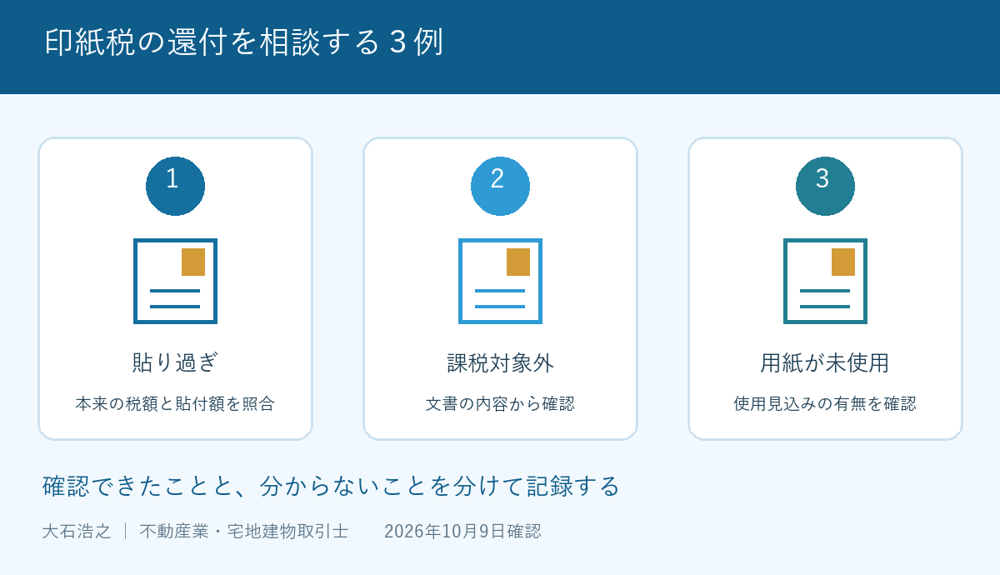

売却が終わり、書類を片付けていたら、使わなかった契約書用紙に収入印紙が貼ってあった。あるいは、契約書に貼った額が大き過ぎる気がする。そんなときは、印紙をはがしたり用紙を捨てたりする前に、文書ごと保管してください。
大石浩之（磐田市／不動産業）です。宅地建物取引士として、私は売却費用の見直しを、次の契約だけの話にしたくありません。2026年10月9日に国税庁の案内を確認しました。過去の支出を整理する場合も、還付を期待する前に、文書と期限を確かめる順番です。
印紙税の還付は３つの類型で確認する
国税庁の「誤って納付した印紙税の還付」は、貼り過ぎ、課税対象でない文書への誤貼付、使用見込みがなくなった課税文書の用紙を、還付対象となるものとして挙げています。過誤納とは、誤って納めたり、必要な額を超えて納めたりした税金のことです。
| 確認する３例 | 見る内容 | 先に残す資料 |
|---|---|---|
| 課税文書に貼り過ぎた | 本来の税額と貼った額の差 | 文書の全体と収入印紙 |
| 課税対象外なのに貼った | 名称だけでなく記載内容 | 本文・別紙を含む現物 |
| 用紙を使う見込みがなくなった | 文書として使用したかどうか | 用紙と使用しなかった経緯 |
例えば、仮に本来１万円の印紙税に対して２万円を貼ったと確認できれば、差額の計算は１万円です。これは計算方法を示す仮例であり、手元の不動産売買契約書の税額を決める例ではありません。契約金額や文書の内容などを確認してから判断します。
課税対象かどうかも、書類の題名だけで決めません。「確認書」と書かれているから対象外、という早合点は避けたいところです。どの取引について何を証明する文書なのかを、税務署や税理士に現物で説明します。
契約書の作り方を見直す話と、既に納めた税金の還付も分けてください。電子契約と印紙税の違いは契約を作る段階の論点です。後から電子化したというだけで、紙の文書に納めた印紙税が返ると考えないことです。
私は、誤って納めた税金を確認し直せる仕組みを評価します。売却が終わった後にも、支出を正す入口があるからです。使わなくなった用紙に貼った印紙まで、確認対象に含まれている点は、知っておく価値があります。
その上で注文したいのは、「余った印紙は返金できる」という省略した説明です。未使用の印紙そのものと、印紙税として文書に貼ったものでは話が違います。家族が郵便局と税務署を行き来しないよう、文書の状態から説明してほしいと思います。

現物と日付を残して期限を確かめる
国税庁の案内では、還付金の請求権は、請求できる日から５年を経過すると消滅します。同ページは、文書作成日から５年を経過したものは対象外と説明しています。見つけた日から５年間あると読み替えてはいけません。
私は、契約書の作成日を最初にメモし、申請できるか迷う場合は早めに税務署へ照会するよう案内します。期限間近の資料を、次の確定申告の時期までそのまま寝かせる理由はありません。起算日や個別の期限は、文書を示して確認してください。
手続に使う書類の正式名は「印紙税過誤納確認申請（兼充当請求）書」です。国税庁は、申請に際して過誤納となっている文書の現物を提示する必要があると説明しています。印紙部分だけの写真や、契約書のコピーを残せば十分という扱いではありません。
自分用の控えとして画像を残すことと、申請に必要な現物を保存することは両立できます。私は、原本の保存袋に作成日と問い合わせ予定を書いた別紙を添える方法を勧めます。契約本文に書き込みを足さず、印紙も付いた状態で保管します。
不動産売買の契約を解除した場合も、用紙が最初から未使用だった場合と一緒にはできません。手付解除の期限と契約条項を確認するのとは別に、作成・使用の経緯を税務署へ説明します。「取引が終わらなかった」という結果だけで還付を決めないことです。
郵便局の交換と税務署の還付を分ける
国税庁は、汚損やき損のない収入印紙について、郵便局で別の額面の印紙と交換できると案内しています。交換手数料は提出する印紙１枚につき５円です。郵便局で収入印紙を現金へ交換することはできません。
つまり、机の引出しに残った未使用の印紙を持って行くことと、印紙税を納め過ぎた文書について申請することは、同じ手続ではありません。窓口へ出向く前に、「印紙だけ」か「文書に貼った状態」かを伝えると、相談の入口を間違えにくくなります。
収入印紙は、登録免許税や国への手数料にも使われます。国税庁は、そうした目的で貼った印紙は、誤って貼った場合でも印紙税法による還付の対象ではないと説明しています。印紙の見た目が同じでも、納めた税や手数料の種類を確かめます。
登記の費用と混ざっている場合は、土地売買の登録免許税の読み方も参考になります。登記書類の印紙を見つけたら、印紙税の申請書を先に作るのではなく、その納付に関わった専門家へ目的を確認するのが私の提案です。
磐田・袋井の売主が問い合わせる前の準備
磐田市・袋井市で家を売った方も、印紙税の還付は納税地の所轄税務署へ申請します。国税庁は、文書の種類や記載内容によって納税地が異なる場合があると案内しています。物件所在地だけで提出先を決めないでください。
問い合わせ用のメモには、文書名、作成日、貼付額、作成や使用の経緯を書きます。書面の郵送提出では、対象の税務署によって業務センター宛てになるため、送り先と現物の扱いを先に確認します。原本を送る必要や返却方法も、窓口の案内を受けて整理します。
私はこう考えます。売却後の家計を整理する机には、領収書だけでなく、使わなかった契約用紙も一度並べたい。返るかもしれない金額を先に手取りへ足すのではなく、現物があり、期限内で、納付目的が分かるかを確認する。これは実際の還付相談の体験談ではなく、私が売主へ勧める書類整理の順番です。
還付を確かめるための手間をどこまでかけるか、私にも迷いはあります。金額が小さいから一律に諦めるとも、必ず専門家へ有料で依頼するとも言えません。まず手元の資料で税務署に確認できる事項を整理し、依頼が必要なら費用と範囲を聞くのがよいと思います。
今日やることは書類を捨てずに分けること
印紙税の還付で今日できる確認は、気になる文書を一つ選び、作成日と印紙の額を書き出すことです。国土交通省が2026年９月４日に案内した住生活月間は、10月１日から31日までです。書類整理との結び付けは私の提案で、同省による還付の呼び掛けではありません。
- 印紙をはがさず文書の現物を保存する。
- 作成日と納付目的を確認する。
- 還付の該当性と提出先を税務署へ聞く。
富士ヶ丘サービスは磐田・袋井に特化し、介護と不動産を一体で相談できる窓口です。家族が困らない売却のため、私は費用の名称を分けて案内します。印紙税の課税・還付の個別判断は、税務署や税理士などの専門家に確認してください。